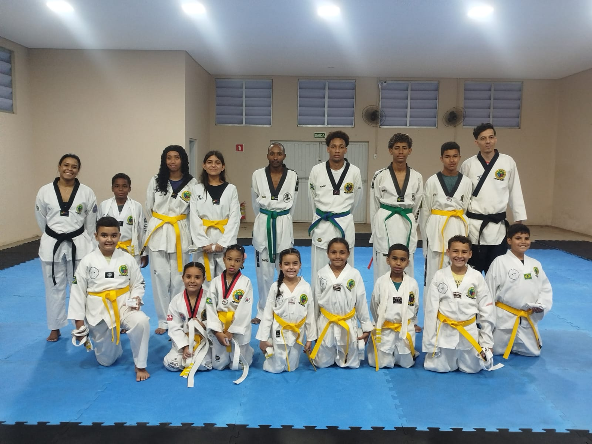

O Projeto “Esporte ao alcance de todos” é uma ferramenta de inclusão social utilizada pelo Taekwondo, Vera Cruz objetivando a emancipação social dos cidadãos e cidadãs veracruzenses desde a infância.
Atualmente o projeto conta com mais de 50 atletas cadastrados e frequentando as aulas, desde crianças a partir dos 05 anos de idade até adultos.
O Taekwondo é a mais antiga arte marcial existente, tendo surgido na Coréia há aproximadamente dois mil anos. Teve influência no surgimento de outras artes, segundo alguns documentos históricos e gravuras em túmulos e paredes de templos encontrados no referido país. A terminologia taekwondo significa “caminho dos pés e das mãos”.
No Brasil, especificamente no município de São Paulo/SP, o Taekwondo teve início no ano de 1970 pelo grão-mestre Sang Min Cho, enviado oficialmente pela International Taekwondo Federation. Posteriormente, a arte foi disseminada pelos mestres Sang Min Kim, Kun Mo Bang, Kum Joon entre outros; e assim, sucessivamente até os dias atuais.
Os princípios do taekwondo são: cortesia, integridade, autocontrole e espírito indomável; devendo ser trabalhados com todos os atletas que iniciam suas práticas nesta arte.
No município de Vera Cruz/SP, o projeto de Taekwondo iniciou suas atividades no ano de 2002 através do Programa Saúde da Família - PSF como uma proposta de acolhimento para a comunidade, em atendimento às Normas do Ministério da Saúde – MS.
Em setembro do ano de 2013 foi fundada a Associação Vera Cruz de Taekwondo, pessoa jurídica sem fins lucrativos, oferecendo a população veracruzense um espaço de convivência e apreensão de valores sociais através do esporte.
As aulas acontecem na Rua José Bonifácio, 410, neste município de Vera Cruz/SP, no salão Amadeu Deoti localizado na Avenida Paulista nº 492, às segundas, quartas e sábados.
O projeto atende um público de cinquenta e cinco atletas entre crianças, adolescentes e adultos, e os atendimentos sociais se estendem aos familiares.